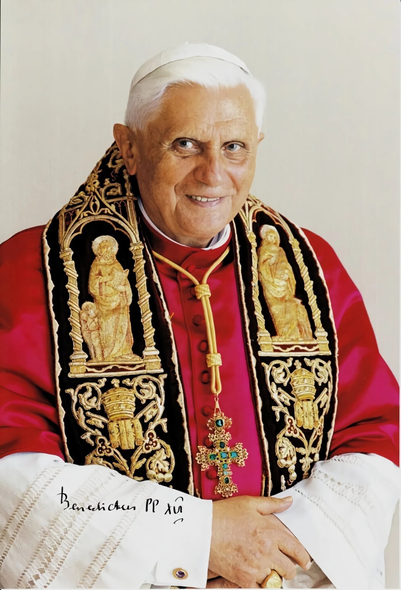

Joseph Alois Ratzinger
Benedicto XVI (en latín: Benedictus PP. XVI), nacido como Joseph Aloisius Ratzinger (1927–2022), fue el papa número 265 de la Iglesia católica y uno de los teólogos más destacados del siglo XX, cuya trayectoria académica despegó como consultor en el Concilio Vaticano II y se consolidó en prestigiosas cátedras universitarias alemanas antes de convertirse en el "guardián de la ortodoxia" como Prefecto de la Doctrina de la Fe.